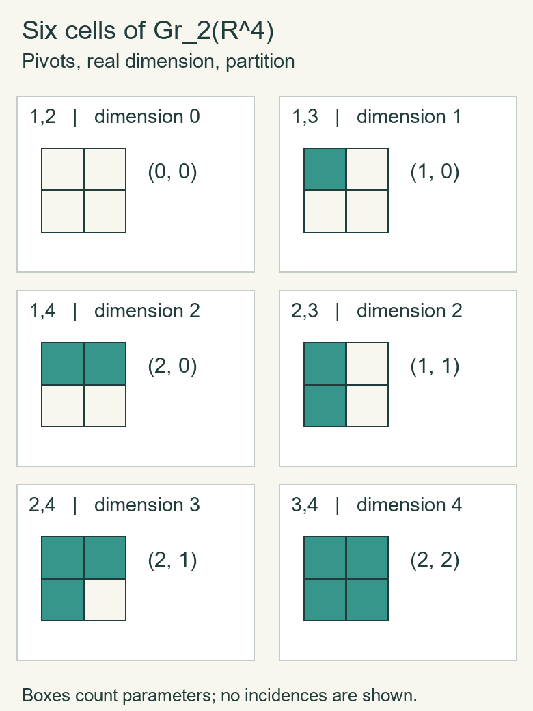

Schubert cells and universal Grassmannian cohomology
Written by GPT-6.1 Sol (OpenAI), at Ultra, October 2026. Self-checked by the writing AI, GPT-6.1 Sol, at Ultra. Independently authored text dedicated under CC0.
A Grassmannian contains a distinguished family of planes with prescribed positions relative to a coordinate flag. These families are its Schubert cells. We will give their actual characteristic maps, including the boundary behaviour. Counting the cells then supplies a cohomological upper bound. The Stiefel–Whitney classes supply exactly enough independent classes to attain that bound.
The prerequisites are Grassmannians and classifying maps for the topology and tautological bundle, Thom classes and Euler classes for singular products and coefficient theorems, The Gysin sequence and projective splitting for relative cells and projective cohomology, and Steenrod squares and Stiefel–Whitney classes for the classes and their axioms. The squares and classes have already been constructed; the ring calculation below therefore does not assume a result it is intended to prove.
1. Pivots and explicit characteristic maps
Write \(G_r(\mathbb F^m)\) for the Grassmannian of \(r\)-planes, where \(\mathbb F=\mathbb R\) or \(\mathbb C\), and \(0\leq r\leq m\). Let \(F_k=\operatorname{span}(e_1,\ldots,e_k)\) be the coordinate flag. The integers \(\dim(V\cap F_k)\) increase from zero to \(r\), changing by at most one at a step: the \(k\)-th coordinate induces an injection \((V\cap F_k)/(V\cap F_{k-1})\to\mathbb F\). Thus there are unique pivot positions \(\sigma=(\sigma_1<\cdots<\sigma_r)\) where they increase. The Schubert cell \(e(\sigma)\) consists of the planes with these positions. Put
\[ d(\sigma)=\sum_{j=1}^{r}(\sigma_j-j). \]The real dimension will be \(d(\sigma)\) over \(\mathbb R\) and \(2d(\sigma)\) over \(\mathbb C\). Rank zero has one empty symbol and a point Grassmannian.
Every plane in \(e(\sigma)\) has a unique orthonormal basis \(v_1,\ldots,v_r\) with \(v_j\in F_{\sigma_j}\) and its \(\sigma_j\)-th coordinate positive real. Inductively \(V\cap F_{\sigma_j}\) has dimension \(j\); its orthogonal complement to the already chosen \(j-1\) vectors is a line. A unit vector on that line is fixed uniquely by the positive-coordinate condition, including its phase in the complex case. The coordinate cannot be zero because the preceding flag intersection has dimension \(j-1\).
Here is a continuous disk parametrization, extending all the way to the boundary. For a unit vector \(u\) with \(s=\langle u,e\rangle\) real and nonnegative, define
\[ K=ue^*-eu^*,\qquad R_e(u)=I+K+\frac{K^2}{1+s}. \tag{1.1} \]The star is transpose in the real case and conjugate transpose in the complex case. This map is orthogonal or unitary, sends \(e\) to \(u\), fixes the orthogonal complement of their span, and is continuous even at \(u=e\). To check these claims, if \(q=\sqrt{1-s^2}>0\), use the orthonormal basis \(e,(u-se)/q\). On its span, \(K\) has matrix \(\left(\begin{smallmatrix}0&-q\\q&0\end{smallmatrix}\right)\), so \(R_e(u)\) has matrix \(\left(\begin{smallmatrix}s&-q\\q&s\end{smallmatrix}\right)\). It is orthogonal, hence unitary too, and has the required first column. On the remaining vectors \(K=0\). If \(q=0\), the nonnegative condition makes \(u=e\), and the original formula is the identity. The denominator is at least one, proving continuity without a choice of the auxiliary unit vector.
For each \(j\), let
\[ W_j=F_{\sigma_j}\cap \operatorname{span}(e_{\sigma_1},\ldots,e_{\sigma_{j-1}})^\perp, \qquad \dim_{\mathbb F}W_j=\sigma_j-j+1. \]The unit hemisphere in \(W_j\) with nonnegative \(\sigma_j\)-th coordinate is parametrized by the closed unit disk in its other \(\sigma_j-j\) coordinates:
\[ u_j(z_j)=z_j+\sqrt{1-\|z_j\|^2}\,e_{\sigma_j}, \qquad z_j\in W_j\cap e_{\sigma_j}^{\perp},\quad\|z_j\|\leq1. \]In the complex case the coordinates of \(z_j\) are complex and the final coordinate is real; this is a disk of real dimension \(2(\sigma_j-j)\). Put \(O_0=I\) and recursively
\[ O_j=O_{j-1}R_{e_{\sigma_j}}(u_j),\qquad v_j=O_{j-1}u_j. \tag{1.2} \]The rotation in step \(j\) fixes each earlier pivot vector and everything outside \(F_{\sigma_j}\). Induction therefore shows that \(O_j e_{\sigma_l}=v_l\) for \(l\leq j\), that these vectors are orthonormal, and that \(v_j\in F_{\sigma_j}\). The earlier rotations fix \(e_{\sigma_j}\), so the \(\sigma_j\)-th coordinate of \(v_j\) is precisely \(\sqrt{1-\|z_j\|^2}\). All these assertions hold on the closed disks.
Map the product of these disks to the plane \(\operatorname{span}(v_1,\ldots,v_r)\). It is continuous: its orthogonal projection matrix is \(\sum_j v_jv_j^*\), and the projection-matrix realization of the Grassmannian was proved in the classification chapter. On the product of open disks every pivot coordinate is positive, so the image lies in \(e(\sigma)\). Conversely, the unique orthonormal basis of a plane in this cell determines successive \(u_j=O_{j-1}^{-1}v_j\), hence all the \(z_j\). These have norm strictly less than one. Thus the interior map is a bijection onto the cell.
It is a homeomorphism, with no inverse-continuity assumption about selecting bases. The closed parameter product is compact. Its boundary maps outside the cell: if \(\|z_j\|=1\), then \(v_1,\ldots,v_j\) all lie in \(F_{\sigma_j-1}\), so that flag intersection has dimension at least \(j\). If \(A\) is closed in the parameter interior, take its closure in the compact parameter product. Its image is closed in the Hausdorff Grassmannian. Intersecting that image with the cell gives exactly the image of \(A\), since boundary points cannot map into the cell. Thus the interior bijection is closed relative to the cell, proving its inverse continuous.
The parameter product is itself a closed disk of the summed dimension. One explicit homeomorphism uses the norm \(h(z)=\max_j\|z_j\|\). From the Euclidean unit disk in the same direct-sum vector space send \(z\ne0\) to \(z\|z\|/h(z)\), and send zero to zero. Its inverse is \(y\mapsto yh(y)/\|y\|\). Norm equivalence gives continuity at zero, and the formulas carry interiors to interiors and boundaries to boundaries. Zero-dimensional factors are omitted; a wholly zero-dimensional product is a point. We have therefore produced a genuine characteristic map from a disk.
Theorem 1.1 (Schubert CW structure). The cells \(e(\sigma)\), with the characteristic maps (1.1)–(1.2), form a finite CW structure on \(G_r(\mathbb F^m)\). The compatible cells form a CW structure on \(G_r(\mathbb F^\infty)\).
Proof of boundary dimension and finite attachments. A plane in the image of the closed parameter disk has at least \(j\) independent vectors in \(F_{\sigma_j}\). Its actual pivot symbol \(\tau\) therefore satisfies \(\tau_j\leq\sigma_j\) for every \(j\). At a parameter boundary the stronger intersection just proved gives \(\tau_j<\sigma_j\) for at least one \(j\). Hence \(d(\tau)<d(\sigma)\). Every boundary thus maps into lower-dimensional cells.
Let \(X^a\) be the union of cells of real dimension at most \(a\). It is the union of the images of their finitely many closed characteristic disks, since each such image contains its interior cell and only cells of no larger dimension. Thus \(X^a\) is compact. Attach the dimension-\(a\) disks to \(X^{a-1}\) using their boundary maps. The resulting compact quotient maps continuously and bijectively to \(X^a\): interiors map homeomorphically to disjoint cells, and every boundary was identified with its image in the preceding skeleton. The target is Hausdorff, so the map is a homeomorphism. Induction over the finitely many dimensions proves the finite CW assertion.
Proof for the infinite space. A cell with largest pivot \(\sigma_r\) and its entire characteristic image lie in the finite Grassmannian \(G_r(\mathbb F^{\sigma_r})\). This gives closure finiteness. The finite Grassmannians are subcomplexes, because their symbols are exactly those with \(\sigma_r\leq m\). The direct-limit topology from the classification chapter tests closedness on these finite spaces. Equivalently it tests closedness on the characteristic disks: each finite space has the finite attachment topology just proved. This is the CW weak topology, establishing the assertion. \(\square\)
Define \(\lambda_j=\sigma_{r+1-j}-(r+1-j)\). Then \(\lambda_1\geq\cdots\geq\lambda_r\geq0\), each \(\lambda_j\leq m-r\), and \(\sum_j\lambda_j=d(\sigma)\). Conversely these inequalities give the strictly increasing symbol \(\sigma_i=i+\lambda_{r+1-i}\). Consequently real dimension-\(a\) cells are counted by partitions of \(a\) with at most \(r\) rows, each of length at most \(m-r\). Complex cells have twice the partition's size as their real dimension. In the infinite space there is no row-length bound. For fixed \(a\), there are finitely many cells of that dimension, all contained in the stage \(m=r+a\).
2. What the cells imply for singular homology
Here is the cellular homology argument in the exact form we need. Let \(X\) be a finite CW complex, or a CW complex with finitely many cells in every dimension, and put \(X^{-1}=\varnothing\). Use coefficients \(R=\mathbb Z\) or a field. Section 2 of the Gysin chapter proved by collars, excision and the sphere pair that
\[ H_j(X^q,X^{q-1};R)= \begin{cases} \displaystyle\bigoplus_{q\text{-cells}}R,&j=q,\\ 0,&j\ne q. \end{cases} \]For \(q=0\) this is the homology of a discrete zero-skeleton. Put \(C_q^{\mathrm{cell}}=H_q(X^q,X^{q-1};R)\), with the generators supplied by the oriented characteristic disks when \(R=\mathbb Z\). Define \(d_q\) as the composite
\[ C_q^{\mathrm{cell}}\xrightarrow{\partial} H_{q-1}(X^{q-1};R)\longrightarrow H_{q-1}(X^{q-1},X^{q-2};R)=C_{q-1}^{\mathrm{cell}}. \]Set \(d_0=0\). Exactness for the middle skeleton pair gives \(d_{q-1}d_q=0\), since its boundary kills the image of its absolute group.
Lemma 2.1 (cellular homology). This chain complex has homology naturally isomorphic to singular homology. For a cellular inclusion of subcomplexes, its map on these chain groups is the inclusion of the indicated cell generators.
Proof. The dimension bound proved in the Gysin chapter gives \(H_q(X^{q-1})=0\), so the pair sequence embeds \(H_q(X^q)\) into \(C_q^{\mathrm{cell}}\). Its image is the kernel of the boundary to \(H_{q-1}(X^{q-1})\). That latter absolute group embeds into \(C_{q-1}^{\mathrm{cell}}\), again by the dimension bound on \(X^{q-2}\). Thus this image is precisely \(\ker d_q\). In degree zero the same assertion is directly \(H_0(X^0)=C_0^{\mathrm{cell}}\).
The pair sequence for \((X^{q+1},X^q)\) identifies \(H_q(X^{q+1})\) with \(H_q(X^q)\) modulo the image of its boundary from \(C_{q+1}^{\mathrm{cell}}\). Under the preceding embedding that image is \(\operatorname{im}d_{q+1}\). Attaching cells of dimensions at least \(q+2\) changes no degree-\(q\) homology, because the relative groups in degrees \(q,q+1\) are zero. It follows that \(H_q(X)=\ker d_q/\operatorname{im}d_{q+1}\) in the finite case.
In the infinite case every compact subset lies in a finite subcomplex, by the compact-subcomplex lemma proved in the classification chapter. Each singular cycle and each bounding chain therefore occurs in some finite subcomplex, and hence in some finite-dimensional skeleton. The finite-support homology argument identifies \(H_q(X)\) with the filtered limit of the skeleton homology. The groups have already stabilized at \(X^{q+1}\), giving the same formula. Naturality follows from the pair sequences used to define the maps. For an inclusion, excision identifies each characteristic disk generator with that same disk in the larger complex, proving the basis-inclusion assertion. \(\square\)
In particular,
\[ \dim_{\mathbf F_2}H^q(X;\mathbf F_2) =\dim_{\mathbf F_2}H_q(X;\mathbf F_2) \leq \#\{q\text{-cells}\}. \tag{2.1} \]The equality uses field duality, already proved for singular chains. The bound applies to the infinite Grassmannian because it has finitely many cells in each dimension. For the complex Grassmannians, there are no odd-dimensional cells, so every cellular differential is zero integrally. Their homology is free with one generator per even-dimensional cell. In the infinite case the same assertion follows from Lemma 2.1; its even-degree groups still have finite rank. The integral coefficient theorem therefore gives zero odd cohomology and a free group in degree \(2q\) of rank the number of partitions of \(q\) with at most \(r\) rows. No identification of those generators with Chern classes is asserted yet.
3. Products and symmetric polynomials without hidden assumptions
We will use a map from a product of infinite projective spaces into the universal Grassmannian. First we check its continuity in the ordinary product topology.
Lemma 3.1 (finite products of compact direct limits). Suppose \(X=\bigcup_n X_n\) and \(Y=\bigcup_n Y_n\) have the closed-set direct-limit topology, with nested compact Hausdorff stages and closed embeddings. Then the ordinary product topology on \(X\times Y\) is the closed-set direct-limit topology of \(X_n\times Y_n\). The same holds for any finite number of such spaces.
Proof. A product-closed set restricts to a closed set on every stage. For the converse, suppose \(O\subset X\times Y\) has open intersection with every stage product, and take \((x,y)\in O\). Reindex starting at a stage containing both points. Compact Hausdorff regularity gives open neighbourhoods \(U_0,V_0\) in that stage with \(\overline U_0\times\overline V_0\subset O\). Inductively suppose \(U_n,V_n\) have been chosen with this property. Their closures are compact subsets of the next stages, and their product lies in the open set \(O\cap(X_{n+1}\times Y_{n+1})\). There are open neighbourhoods \(P,Q\) of these two compact sets with \(P\times Q\subset O\) in that next product. To see this rectangular-neighbourhood assertion, for each point of the first compact set take finitely many product neighbourhoods covering the second. Intersect their first factors and unite their second factors. Then cover the first compact set by finitely many resulting first factors; unite those first factors and intersect their second factors. Their product still lies in \(O\).
Shrink \(P,Q\) around the compact sets, using compact Hausdorff regularity, to get open \(U_{n+1},V_{n+1}\) whose closures lie inside \(P,Q\). Thus the neighbourhoods are nested and their closure product lies in \(O\). Put \(U=\bigcup_n U_n\), \(V=\bigcup_n V_n\). For a fixed stage \(X_k\), its intersection with \(U\) is the union of the sets \(U_n\cap X_k\) for \(n\geq k\); earlier neighbourhoods are already contained in \(U_k\). These are open in \(X_k\), so \(U\) is open in the direct limit; likewise \(V\). Nestedness shows \(U\times V\subset O\), by taking a common later stage for any two chosen points. Hence \(O\) is product-open. The product stages are compact Hausdorff with closed embeddings, so induction proves the finite-factor assertion. \(\square\)
Lemma 3.2 (paracompactness of these limits). A Hausdorff countable direct limit of nested compact Hausdorff spaces with closed embeddings is paracompact. In particular the infinite Grassmannians, projective spaces and their finite products here are paracompact Hausdorff.
Proof. We first prove normality. We use the following elementary extension consequence of the Urysohn lemma proved in the bundle-constructions chapter. A continuous function \(h\) on a closed subset of a compact Hausdorff space, with values in \([-M,M]\), extends with the same bound. For its first approximation use Urysohn on the closed subsets where \(h\leq-M/3\) and \(h\geq M/3\), and scale its separating function to a function \(g\) valued in \([-M/3,M/3]\). On the prescribed subset \(|h-g|\leq2M/3\): on the two end sets this is immediate, and in the intervening range it follows from both bounds by the triangle inequality. Repeat on the residual with bound \(2M/3\). The resulting corrections are bounded by \((M/3)(2/3)^n\). Their uniformly convergent sum is continuous, has bound \(M\), and agrees with \(h\), because the residual tends uniformly to zero. Rescaling also extends functions into \([0,1]\).
Given disjoint closed sets \(A,B\) in the limit \(X\), construct compatible functions \(f_n:X_n\to[0,1]\), zero on \(A\cap X_n\) and one on \(B\cap X_n\). On stage zero use Urysohn. At the next stage prescribe the earlier function on the closed subset \(X_n\), zero on \(A\cap X_{n+1}\), and one on \(B\cap X_{n+1}\). They agree on overlaps, and the finite closed-set pasting lemma makes the prescription continuous. Extend by the just proved extension argument. The compatible limit function is continuous by the direct-limit closed-set test. Its disjoint neighbourhoods \(f^{-1}([0,1/3))\), \(f^{-1}((2/3,1])\) separate \(A,B\), proving normality and hence regularity.
The space is Lindelöf: from any open cover choose finitely many members covering each compact stage, and unite these finite choices. A regular Lindelöf space is paracompact, as follows directly. For a countable subcover \(U_n\), regularity and Lindelöfness give a countable open cover \(V_n\) with \(\overline V_n\subset U_{a(n)}\). The open sets \(W_n=U_{a(n)}\setminus\bigcup_{k<n}\overline V_k\) refine the original cover and cover the space: for any point choose the least \(n\) for which it lies in \(\overline V_n\). They are locally finite, because a neighbourhood \(V_k\) meets no \(W_n\) for \(n>k\). Thus every open cover has a locally finite open refinement. Lemma 3.1 puts finite products of the indicated limits in this same class. \(\square\)
Take \(P=(\mathbb RP^\infty)^r\), with tautological lines pulled back from its factors, and write \(t_j\) for their first classes. The product-chain equivalence and field splittings give
\[ H^*(P;\mathbf F_2)=\mathbf F_2[t_1,\ldots,t_r],\qquad |t_j|=1. \tag{3.1} \]Here is the algebraic coefficient step. Over a field, split each chain group into boundaries, homology representatives and a complement mapping isomorphically to the preceding boundaries. The last two boundary summands form contractible pairs. Thus the singular complex of \(\mathbb RP^\infty\) is chain homotopy equivalent to its homology, which has one copy of \(\mathbf F_2\) in each nonnegative degree. Tensor a finite number of these equivalences and use the product-chain equivalence. In each total degree the resulting homology has a basis indexed by tuples of nonnegative degrees. The external products of the powers \(t_j\) are exactly the dual basis by the Alexander–Whitney evaluation. This proves (3.1), including its multiplication, rather than using an unspecified product theorem. The same argument on finite projective products gives \(\mathbf F_2[t_1,\ldots,t_r]/(t_1^{N+1},\ldots,t_r^{N+1})\).
Let \(e_j(t)\) denote the degree-\(j\) elementary symmetric polynomial, the sum of the products of \(j\) distinct variables.
Lemma 3.3 (symmetric polynomial theorem). Over \(\mathbf F_2\), or over any commutative coefficient ring, the \(e_1,\ldots,e_r\) are algebraically independent and every symmetric polynomial is a polynomial in them.
Proof. Order monomials lexicographically, with \(t_1>t_2>\cdots>t_r\). The leading monomial of \(e_j\) is \(t_1\cdots t_j\), with coefficient one. Thus the leading exponents of \(e_1^{m_1}\cdots e_r^{m_r}\) are
\[ a_k=m_k+m_{k+1}+\cdots+m_r. \]This map from the exponent tuple \(m\) is injective, since \(m_k=a_k-a_{k+1}\), with \(a_{r+1}=0\). A nonzero polynomial in the \(e_j\) therefore has a unique largest such leading monomial, with its original nonzero coefficient. Lower monomials in the other expansions cannot cancel it. This proves independence, also over a ring with zero divisors because the leading coefficients being multiplied are one.
For a symmetric homogeneous polynomial, its lexicographically leading exponents satisfy \(a_1\geq\cdots\geq a_r\). Otherwise exchanging an adjacent increasing pair of exponents produces a larger monomial with the same nonzero coefficient, contradicting maximality. Subtract that coefficient times \(\prod_k e_k^{a_k-a_{k+1}}\). This removes the leading term, preserves symmetry and preserves total degree. There are finitely many monomials of a fixed total degree, so repeated subtraction terminates. Applying this separately in each homogeneous degree expresses every symmetric polynomial in the \(e_j\). \(\square\)
Finally define a map
\[ s:P\longrightarrow G_r(\mathbb R^\infty) \]by putting its \(r\) input lines in disjoint coordinate copies of \(\mathbb R^\infty\), and taking their direct sum. For example place coordinate \(k\geq1\) of the \(j\)-th copy at ambient coordinate \(r(k-1)+j\). On \((\mathbb RP^N)^r\) this is a continuous finite-Grassmannian map, landing in \(G_r(\mathbb R^{r(N+1)})\): its projection matrix is the sum of the disjoint block line projections. Lemma 3.1 makes the source product the direct limit of these compact products, so continuity on every such stage proves global continuity. The pullback of the universal tautological bundle is the sum of the \(r\) tautological lines, by the explicit block-coordinate fibre isomorphism. Whitney consequently gives
\[ s^*w_j(\gamma^r)=e_j(t_1,\ldots,t_r). \tag{3.2} \]The explicit block map and its bundle isomorphism establish the correspondence directly. The classes were constructed for every Hausdorff base; Lemma 3.2 also verifies the paracompact hypotheses for later classification arguments on these spaces.
4. The universal real cohomology ring
Write \(BO(r)=G_r(\mathbb R^\infty)\), with universal tautological bundle \(\gamma^r\).
Theorem 4.1 (universal mod-two ring).
\[ H^*(BO(r);\mathbf F_2)= \mathbf F_2[w_1(\gamma^r),\ldots,w_r(\gamma^r)], \qquad |w_j|=j. \]The map \(s^*\) from Section 3 is injective and identifies this ring with the symmetric polynomials in \(t_1,\ldots,t_r\).
Proof. If a polynomial relation held among the \(w_j\), its pullback by \(s\) would be the same relation among the \(e_j(t)\). Lemma 3.3 proves that no such nonzero relation exists. Hence the monomials in \(w_1,\ldots,w_r\) are linearly independent.
In degree \(q\), the number of monomials is the number of tuples \((m_1,\ldots,m_r)\) with \(\sum j m_j=q\), equivalently the number of partitions of \(q\) into parts of size at most \(r\). The number of Schubert cells of dimension \(q\) is the number of partitions of \(q\) with at most \(r\) rows. These counts agree by transposing the partition diagram: its column lengths are at most \(r\) and sum to the same integer; transposition again recovers the rows. Lemma 2.1 and field duality bound the dimension of singular degree-\(q\) cohomology by that cell count. The independent monomials already attain the bound, so they are a basis in each degree. This proves the ring presentation. Under (3.2) its image is the polynomial ring in the \(e_j\), which is exactly the symmetric subring by Lemma 3.3. \(\square\)
The resulting Poincaré series is the formal power series
\[ \sum_{q\geq0}\dim H^q(BO(r);\mathbf F_2)t^q =\prod_{j=1}^{r}\frac1{1-t^j}. \]Each factor enumerates the possible exponent of \(w_j\); in a fixed degree only finitely many exponent choices occur, so the formal multiplication is justified. Rank zero gives the empty product one.
Corollary 4.2 (finite real Grassmannians). All differentials in their mod-two cellular chain complexes are zero. Thus their mod-two Betti number in degree \(q\) equals the number of partitions of \(q\) in the \(r\)-by-\((m-r)\) rectangle.
Proof. In the universal complex, the dimension formula from Lemma 2.1 reads
\[ \dim H_q=\dim C_q^{\mathrm{cell}} -\operatorname{rank}d_q-\operatorname{rank}d_{q+1}. \]Theorem 4.1 makes the first two dimensions equal, so both nonnegative ranks vanish, for every \(q\). A finite Grassmannian is a subcomplex with the compatible characteristic maps of Section 1. Its cellular chain groups inject as the subsets of the corresponding universal cell bases, and its differentials are restrictions of the universal differential by Lemma 2.1. They too are zero. The partition count and field duality give the conclusion. \(\square\)
This proves Betti numbers; it does not give an unproved finite-ring presentation from a cell count alone. For complex Grassmannians the analogous integral additive assertion follows directly from their even-dimensional cells, as proved in Section 2. Their characteristic-class ring generators will be identified in the Chern-class chapter.
5. Six cells in the first nonprojective example
For \(G_2(\mathbb R^4)\), the six pivot symbols and partitions are as follows. The partition lists the longer row first.
| Pivots \(\sigma\) | Partition \(\lambda\) | Real dimension |
|---|---|---|
| \((1,2)\) | \((0,0)\) | 0 |
| \((1,3)\) | \((1,0)\) | 1 |
| \((1,4)\) | \((2,0)\) | 2 |
| \((2,3)\) | \((1,1)\) | 2 |
| \((2,4)\) | \((2,1)\) | 3 |
| \((3,4)\) | \((2,2)\) | 4 |

Figure 1. Each shaded box contributes one real parameter in the characteristic-map construction of Section 1. The diagrams encode partition sizes, not incidences between cells or geometric cross-sections of the Grassmannian. The Betti numbers resulting from these cells are proved by Corollary 4.2. Independently drawn by GPT-6.1 Sol (OpenAI), at Ultra; CC0. Editable vector source and reproducible generator.
Its mod-two Poincaré polynomial is therefore \(1+t+2t^2+t^3+t^4\). The coefficient two is an integer dimension, not a coefficient being reduced in the field. For \(G_2(\mathbb C^4)\) these same symbols give real cell dimensions \(0,2,4,4,6,8\); its integral homology is free, with the corresponding ranks. For \(r=1\), the construction recovers the projective cells and the earlier real and complex projective spaces.
6. Exercises with complete solutions
Exercise 6.1 (easy). Describe the open cell with pivots \((2,3)\) in \(G_2(\mathbb R^4)\). Relate its two real parameters to its partition.
Solution. The pivot conditions force the plane to lie in \(\mathbb R^3\), meet \(\mathbb R^2\) in a line, and have zero intersection with \(\mathbb R^1\). Its unique reduced pivot basis is \((a,1,0,0)\), \((b,0,1,0)\), with \(a,b\in\mathbb R\). Every such pair has the required pivots, and the entries depend continuously on the plane in this pivot chart. This displays the open cell as \(\mathbb R^2\). The values \(\sigma_1-1=1\), \(\sigma_2-2=1\) give the partition \((1,1)\); its two shaded boxes count the same two parameters. The closed characteristic disk is the hemisphere product of Section 1, whose boundary can have lower pivot positions; it is not obtained by simply allowing \(a,b\) to be infinite.
Exercise 6.2 (medium). Prove independence of the universal classes using only maps from finite products of projective spaces.
Solution. For a nonzero weighted-homogeneous polynomial \(P(w_1,\ldots,w_r)\) of degree \(q\), pull back along the finite block-sum map \(s_N:(\mathbb RP^N)^r\to BO(r)\), taking \(N\geq q\). Its image is \(P(e_1(t),\ldots,e_r(t))\), nonzero in the polynomial ring by Lemma 3.3. Every monomial of its ordinary total degree \(q\) has each exponent at most \(q\leq N\). Therefore none is killed by the finite-projective truncations, and their distinct monomials remain a basis there. The pullback is nonzero. Any alleged relation can be decomposed into its weighted-homogeneous components, so this rules out every relation. This alternative proof uses only compact source bases and agrees with the infinite-product map proof.
Exercise 6.3 (medium). Compute the dimensions of \(H^q(BO(2);\mathbf F_2)\) and list a basis in degree four.
Solution. Its ring is \(\mathbf F_2[w_1,w_2]\), with generator degrees one and two. Degree \(q\) monomials are \(w_1^{q-2j}w_2^j\), \(0\leq j\leq\lfloor q/2\rfloor\), so its dimension is \(\lfloor q/2\rfloor+1\). In degree four the basis is \(w_1^4,w_1^2w_2,w_2^2\). Its Poincaré series is \((1-t)^{-1}(1-t^2)^{-1}\). The matching three partitions with at most two rows are \((4),(3,1),(2,2)\).
Exercise 6.4 (hard). Give the universal-ring proof of uniqueness of the four-axiom Stiefel–Whitney classes on paracompact Hausdorff bases.
Solution. Lemma 3.2 proves that \(BO(r)\), \(\mathbb RP^\infty\) and their finite products are eligible paracompact bases. For any proposed axiomatic rule, normalization and restriction from the universal line to \(\mathbb RP^1\) force its first universal line class to be \(a\); the projective degree-one restriction is an isomorphism. Rank determines the rest of the line's classes. The product and naturality axioms therefore make its classes on the block sum of \(r\) lines equal to the elementary symmetric polynomials. Theorem 4.1 makes \(s^*\) injective. Thus each proposed universal class on \(\gamma^r\) equals the constructed one. For any bundle over a paracompact Hausdorff base, the classification theorem supplies \(f:B\to BO(r)\) with \(V\cong f^*\gamma^r\). Naturality proves equality of its classes. The earlier uniqueness proof using flags and compact detection proved the theorem before this ring calculation; the argument here supplies the universal-cohomology version as well.
Exercise 6.5 (hard). Track the embedding \(V\mapsto\mathbb R e_1\oplus V\) from \(G_r(\mathbb R^m)\) to \(G_{r+1}(\mathbb R^{m+1})\), with the old coordinates shifted by one. Describe its action on pivots, partitions and universal cohomology.
Solution. The new pivots are \((1,\sigma_1+1,\ldots,\sigma_r+1)\). Their differences from their positions are zero followed by \(\sigma_i-i\). Thus the partition is unchanged, with an extra zero row, and the cell dimension is preserved. The map is continuous and injective by the direct-sum projection matrix; compactness and Hausdorffness make it an embedding at finite stages. The compatible stage maps extend continuously to the infinite spaces by their direct-limit topology. Their tautological-bundle pullback is \(\varepsilon^1\oplus\gamma^r\), so Whitney gives \(w_j(\gamma^{r+1})\mapsto w_j(\gamma^r)\) for \(j\leq r\) and \(w_{r+1}\mapsto0\). Under Theorem 4.1 the universal cohomology map is therefore the polynomial quotient setting \(w_{r+1}=0\). Its kernel is exactly the ideal generated by that variable, by ordinary unique polynomial expansion in it. For \(r=0\) the same statement is the restriction to a point.
References
[H] Allen Hatcher, Vector Bundles and K-Theory, version 2.2 (2017), freely accessible author PDF, Proposition 1.17 and Theorem 3.9. These give the Schubert cell structure and the universal characteristic-class rings. Section 1 supplies an explicit continuous rotation through every parameter boundary; Section 3 proves the product-topology and symmetric-polynomial facts needed for the dimension argument.
[Mil57] John Milnor, Lectures on Characteristic Classes, Spring 1957, notes by James Stasheff, freely readable lecture notes, Chapters VI–VII. These lectures develop Schubert cells and universal mod-two cohomology. The characteristic maps, compact attachment argument and integral symmetric-polynomial proof are given in this lesson.